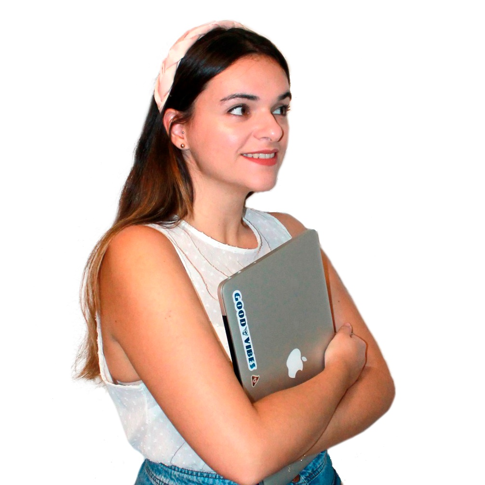

Sobre mi
Especialidades: Comunicación, Marketing y Diseño UX/UI
🤓Gracias a mi experiencia profesional y formativa he desarrollado una visión multidisciplinar en el ámbito laboral.
👩🏼🎤Busco siempre la mejora constante y disfruto aprendiendo nuevas técnicas con el fin de optimizar los procesos.
Herramientas